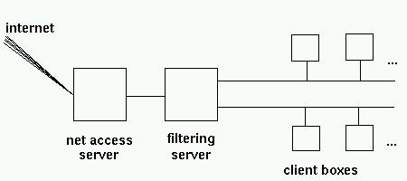
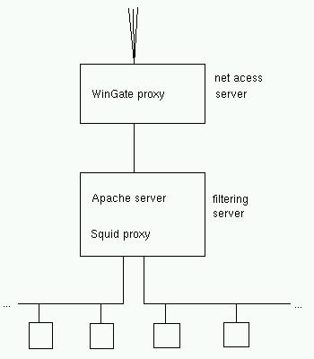
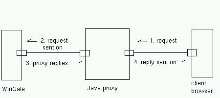

I'm writing this article after a couple of weeks of messing around getting our local school network hooked up to the net. Our problem was similar, I guess, to that of many schools: how do you give students' boxes access to the net, but restricting both certain types of content and certain services altogether (IRC)?
A minor extra point was that I wanted to separate our two computer labs' networks into different segments with some kind of packet filtering in between. With the number of computers going up, so was the collision rate.
I had the following material considerations to take into account:
By now, the network hardware setup was more or less clear, thusly:

The filtering server also runs our local web server (Apache).
Now came the interesting part: how was I to configure the lot into a working setup?
The Linux built-in firewall
My first idea was to use Linux' routing capacities. You can set up just about any Linux box as a router to separate two or more ethernet segments. It just needs a card for each segment - not even necesserily running at the same speed. You then configure the kernel built-in firewall to ignore packets that have source and destination addresses within the same segment, but to forward packets with source and destination addresses in different segments.
This can be a definite gain of speed as the number of collisions on an ethernet network goes up with the number of nodes on each segment - and each collision requires a time-out to retry sending the packet. So, for example, three segments with ten nodes each and a Linux firewall in between outperforms a single segment with all thirty nodes under normal and heavy traffic loads.
For more information, read the Firewall-HOWTO and the ipchains manual page
A simple setup would then be to program the clients to use the net access server as their web proxy, and use the filtering server as a firewall. This is just about the most classical distribution of roles imaginable.
So why couldn't this work for me? The answer lies in the fact that to enable routing, both the client boxes and the net access server had to have the filtering server as their gateway. This worked fine as long as the ISDN wasn't up. But when ISDN went up, the default gateway on the net access server (running under Windows, remember?) became our ISP.
So a request emanating from a client box goes into the filter, and is forwarded to the net access. The WinGate proxy does its stuff, and replies to our local client - but this message is routed back off to our ISP ... and the client gets no reply.
The Squid proxy
As a second approach, I thought of using the squid proxy, cascaded under WinGate. This way, a client request goes to squid on the filter. Squid then determines if the request goes to the local server, or has to be forwarded to the WinGate machine:

And did this work? Yes, very well ... as long as the client requested either the local server or an internet website by giving its IP address. The problem was with DNS.
The squid proxy has to determine where to send each request. So even if you give it a default cascaded proxy, it still tries to perform DNS address resolution on each URL it receives.
I then tried the following: set up WinGate as a DNS proxy as well as www, and tell the filter to use the net access box as its main DNS. The requests went through to WinGate, but got no reply from the 'net. Confounding ... and the client box gets a message from squid complaining it can't proceed with address resolution. Needless to say, the net access server's DNS setup works well on its own.
Another approach was to use the Apache webserver's proxy capabilities. This worked just as well - and just as badly - as squid.
Recommended reading: all 1907 lines of /etc/squid/squid.conf . Same for /etc/httpd/conf/httpd.conf .
Homebuilt Java proxy
As you may imagine, I was at this time fresh out of ideas. And school-in was 48 hours away. So I took the only reasonable decision - write my own proxy daemon in Java, to be installed on the filter.
This may take a bit of explaining. First of all, why is writing
a proxy daemon reasonable? In this case, the proxy just had to:

There is no caching, no address resolution, nothing else to be done.
Secondly, why is it reasonable to write such a program in Java, when network programming is traditionnaly done in C? Mainly because programming sockets in C is a pain, and doing it in Java is painless. All relevant classes are available in java.net.* : Socket, ServerSocket, DataInputStream and PrintStream are about all you need.
It is also as easy in Java as is C to fork off a process to handle separately each client connection. The difference is that in Java, one usually uses a thread, not a separate process. This has some advantages on the typical C solution. Each process has its own memory allocation, etc, and so takes relatively longer to establish. A thread is an altogether lighter structure.
Finally, it works. To be quite honest, it works more quickly than I thought, and what was initially conceived as a quick solution looks to stay as a permanent one. In fact, with 20-30 clients going full steam on Internet, the limiting factor is ... our ISP.
Future improvements
Just one on my TODO list: as it stands, there is no page content filtering. I will work on that later on (and cut out web-based chats at the same time).
My source code is here: proxy.java, naturally under GPL. Please send me any comments you may have.